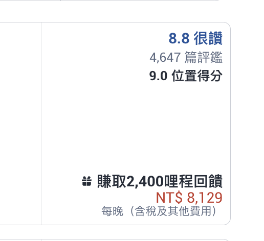
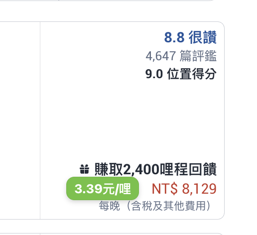
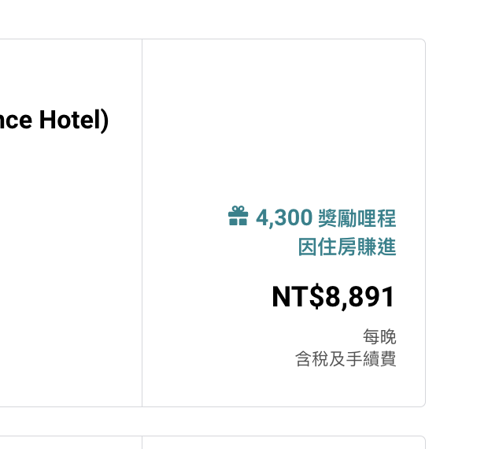
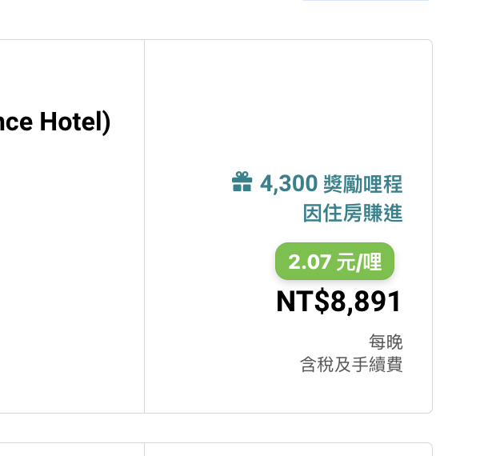

StayMiles
飯店哩程比值
StayMiles · 使用前使用後


在飯店價格旁顯示台幣每哩成本或美元每元可得哩程，滑鼠停留可查看計算明細。
適用網址與版本
- https://www.staymiles.china-airlines.com/search
- https://www.staymiles.china-airlines.com/hotel*
版本 1.0.0 · 更新 2026-09-28
Bookmarklet Script Manager 讓你匯入、管理並執行 JavaScript 小工具，為正在使用的網站加上需要的功能。
Bookmarklet Script Manager 的開源腳本工具集
從飯店每哩成本，到機票里程加附加費，讓腳本把比較需要的資訊補到原網頁上。
Klook 訂單分類腳本會讀取訂單圖示的分類，在標題旁補上文字標籤，也會處理之後動態載入的訂單。
Market 是起點。依照 Skill 指南，向 AI 描述目標網站與需求，製作並測試自己的腳本，再匯入插件管理。
從現有腳本開始，找到適合你的用途。
匯入前，先檢視原始碼與適用網站。
飯店哩程比值


在飯店價格旁顯示台幣每哩成本或美元每元可得哩程，滑鼠停留可查看計算明細。
版本 1.0.0 · 更新 2026-09-28
長榮哩程比值


在飯店價格旁顯示台幣每哩成本或美元每元可得哩程，滑鼠停留可查看計算明細。
版本 1.0.0 · 更新 2026-09-28
里程與附加費總額
以每里 US$0.01 加上 tooltip 的 USD 附加費，在里數旁顯示估算總額。換頁後需重新執行。
版本 1.0.1 · 更新 2026-10-14
訂單分類標籤
在每筆訂單標題旁顯示從分類圖示解析出的分類。
版本 1.0.0 · 更新 2026-08-06
腳本會與目前網頁內容互動。匯入前，請先檢視原始碼與適用網址。
安裝 Bookmarklet Script Manager。GitHub 匯入需要 1.2.1 或更新版本。
前往 Chrome 商店從上方工具集查看用途與原始碼，按下「複製 GitHub 連結」。
回到工具集開啟擴充功能的「管理指令碼」，到「GitHub」分頁貼上連結，再儲存。
查看匯入示範前往腳本適用的網站，從擴充功能選擇腳本執行，結果就出現在頁面上。
查看執行方式把想省下的操作告訴 AI。依照 Skill 指南，
製作、檢查並測試自己的腳本。